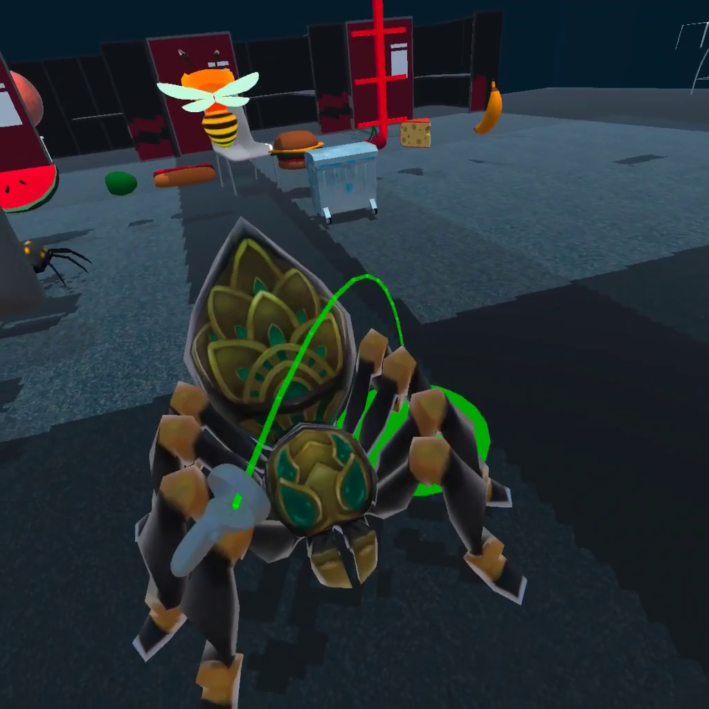
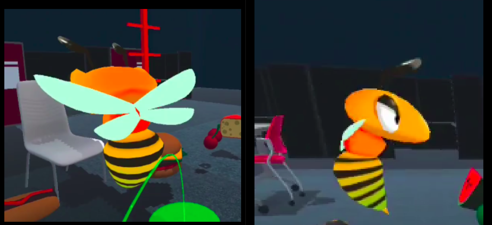
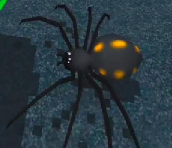

<h1 id="project-3-perspective">Project 3: Perspective</h1>
<h2 id="introduction">Introduction</h2>
<h2 id="how-to-build-it">How to build it?</h2>
<h2 id="how-to-use-it">How to use it?</h2>
<h3 id="the-different-scenes">The Different Scenes</h3>
<h4 id="default-scene-and-the-menu-system">1. Default Scene and the Menu System</h4>
<h4 id="the-land-of-the-giants">1. The Land of the Giants</h4>
<h4 id="dancing-on-the-ceiling">1. Dancing on the Ceiling</h4>
<h4 id="mego-playset">1. Mego Playset</h4>
<h2 id="models-used">Models Used</h2>
<ol type="1">
<li>Animated Spider by prism bucket Link: https://assetstore.unity.com/packages/3d/characters/animals/insects/animated-spider-22986</li>
</ol>
<figure>
<figcaption>Animated Spider</figcaption>
</figure>
<ol start="2" type="1">
<li>Fantasy Bee by amusedART Link: https://assetstore.unity.com/packages/3d/characters/animals/fantasy-bee-135487</li>
</ol>
<figure>
<figcaption>Fantasy Bee</figcaption>
</figure>
<ol start="3" type="1">
<li>Banana: Food Pack - 3D Microgames by Unity Tech Link: https://assetstore.unity.com/packages/3d/food-pack-3d-microgames-add-ons-163295</li>
<li>Cheese: Food Pack - 3D Microgames by Unity Tech Link: https://assetstore.unity.com/packages/3d/food-pack-3d-microgames-add-ons-163295</li>
<li>Cherry: Food Pack - 3D Microgames by Unity Tech Link: https://assetstore.unity.com/packages/3d/food-pack-3d-microgames-add-ons-163295</li>
<li>Hamburger: Food Pack - 3D Microgames by Unity Tech Link: https://assetstore.unity.com/packages/3d/food-pack-3d-microgames-add-ons-163295</li>
<li>Hotdog: Food Pack - 3D Microgames by Unity Tech Link: https://assetstore.unity.com/packages/3d/food-pack-3d-microgames-add-ons-163295</li>
<li>Olive: Food Pack - 3D Microgames by Unity Tech Link: https://assetstore.unity.com/packages/3d/food-pack-3d-microgames-add-ons-163295</li>
<li>Watermelon: Food Pack - 3D Microgames by Unity Tech Link: https://assetstore.unity.com/packages/3d/food-pack-3d-microgames-add-ons-163295</li>
</ol>
<figure>
<figcaption>Food Stuff</figcaption>
</figure>
<ol start="10" type="1">
<li>Table: Modern Table with Chair by Aquvelous Link: https://assetstore.unity.com/packages/3d/props/interior/modern-table-with-chairs-83834</li>
</ol>
<figure>
<figcaption>Table</figcaption>
</figure>
<ol start="11" type="1">
<li>Chair: Modern Table with Chair by Aquvelous Link: https://assetstore.unity.com/packages/3d/props/interior/modern-table-with-chairs-83834</li>
</ol>
<figure>
<figcaption>Chair</figcaption>
</figure>
<ol start="12" type="1">
<li>Low Poly Trashbin by The Location Lab Link: https://assetstore.unity.com/packages/3d/low-poly-trashbin-60789</li>
</ol>
<figure>
<figcaption>Low Ply Trashbin</figcaption>
</figure>
<ol start="13" type="1">
<li>Trash Can1: Trash Can by ozgur Link: https://assetstore.unity.com/packages/3d/props/exterior/trash-can-23183</li>
<li>Trash Can2: Trash Can by ozgur Link: https://assetstore.unity.com/packages/3d/props/exterior/trash-can-23183</li>
</ol>
<figure>
<figcaption>Trash Cans</figcaption>
</figure>
<ol start="15" type="1">
<li>Egypt Pack - Spider Demo by Openlab Link: https://assetstore.unity.com/packages/3d/characters/animals/insects/egypt-pack-spider-demo-165807</li>
</ol>
<figure>
<figcaption>Second Spider</figcaption>
</figure>
<h2 id="video">Video</h2>
<p>Video can be found at <a href="https://www.youtube.com/watch?v=IpevtdwvZZg" class="uri">https://www.youtube.com/watch?v=IpevtdwvZZg</a></p>
<iframe width="560" height="315" src="https://www.youtube.com/embed/IpevtdwvZZg" title="YouTube video player" frameborder="0" allow="accelerometer; autoplay; clipboard-write; encrypted-media; gyroscope; picture-in-picture" allowfullscreen>
</iframe>
<h2 id="discussion-the-different-perspectives">Discussion: The different perspectives</h2>
